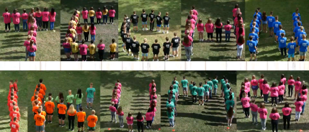
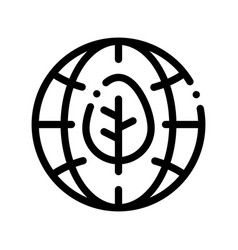
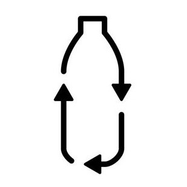

VSZC Ipari Technikum
Elérhetőségek:
Iskola weboldala
Email: isk@ipariszakkozep.hu
Telefon: +36 70 641 3617
Facebook: Veszprémi Szakképzési Centrum Ipari Technikum
8200 Veszprém, Iskola utca 4.
- Felvételi:
- A pályaorientációs kisfilmért és további videókért katt a képre:
 - Az Ipari DÖK által vezetett Instagram: @ipariselet
- Iskolaújság: Ipari Forradalom
Felvételi információk szakonként
Általános felvételi információk (Oktatási Hivatal)
Tanulói jelentkezési lap a Központi írásbeli felvételi vizsgára
-
Szoftverfejlesztő, -tesztelő
Te lehetsz az a szakember aki programokat ír több különböző programozási nyelven, hardvert választ, tesztel, hibáját keresi és javítja, számítógépes hálózatot épít és üzemeltet.
-
Gépgyártástechnológiai technikus
Üzemek középvezetésére alkalmas szakember lehetsz, aki ismeri a gépeket, szerszámokat, vezérléseket és gyártástechnológiákat. Gépalkatrészeket tervezhetsz, és gyárthatsz, karbantarthatod a gyártósori gépeket.
-
Mechatronikai technikus
Önállóan, vagy mérnöki irányítással részt vehetsz a gyártási folyamatok tervezésében, irányításában, felügyeletében. Pneumatikai, elektropneumatikai, PLC rendszereket üzemeltethetsz. Alkalmas lehetsz a fejlesztési és beruházási feladatok megoldására.
 
-
Vegyésztechnikus
Több munkakörben, élelmiszeripari, gyógyszeripari, vegyipari laboratóriumban laboráns vagy középvezetésre alkalmas szakember lehetsz, aki ismeri az alapvető analitikai, vegyi anyag előállítási, vegyipari műveleti eljárásokat.
-
Környezetvédelmi technikus
Több munkakörben laboratóriumi dolgozó, vízügyi dolgozó, önkormányzati referens lehetsz. Olyan szakember aki ismeri az alapvető környezeti veszélyeket, azok mérési módszereit, és elhárításuk módját.
-
Műanyagfeldolgozó technikus
Műanyag-feldolgozó üzemek középvezetésére alkalmas szakember lehetsz, aki ismeri a műanyag alapanyagok kémiai, fizikai, feldolgozás- és alkalmazástechnikai tulajdonságait, a műanyag feldolgozó gépeket, szerszámokat és gyártástechnológiákat
-
Kisgyermekgondozó és –nevelő
Állami vagy magánintézményben 0-6 év közötti kisgyermekekről gondoskodhatsz, te leszel az aki ellátja őket és segíti a fejlődésüket. Hasonló feladatok végzésére családnál is el lehet helyezkedni.